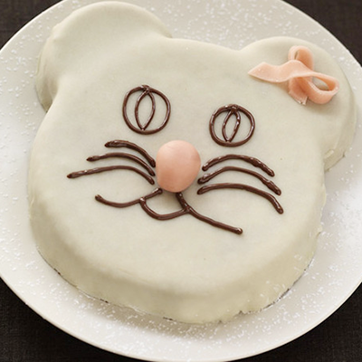

Tu rêves d’un gâteau en forme de chat ? Ça tombe très bien, Gusteau possède une recette spécialement pour toi et il est heureux de te la faire partager ! Découvre donc comment faire un super gâteau chocochat pour environ 10 personnes.

Les ingrédients
200g de framboises
1 tablette de Nestlé Dessert Noir de 250g
2 poires
5 œufs
150g de farine
50g de pâte d’amande rose
100g de beurre
50g de sucre
1 sachet de levure chimique
La recette
Demande à un adulte de préchauffer le four à 210°C.
Prends un saladier et fais fondre au four à micro-ondes 190 g de chocolat et le beurre pendant 3 min à 500W.
Verse la pâte dans un grand moule et un petit moule. Demande à un adulte de les faire cuire au four 25 minutes pour le grand et 15 minutes pour le petit.
Laisse refroidir et démoule les gâteaux.
Coupe le petit gâteau en deux pour faire les oreilles. Etale la pâte d'amande blanche sur une feuille de papier sulfurisé et dépose-la sur les gâteaux. Décolle la feuille de papier sulfurisé. Etale la pâte d'amande rose en formant un ruban et réalise un nœud, dépose-le sur une oreille. Avec une petite boule rose, réalise le nez.
Fais fondre le chocolat restant avec une cuillerée à soupe d'eau et réalise les yeux, la bouche et les moustaches.
Tu peux réaliser aussi le glaçage en chocolat blanc en faisant fondre 150 g de Nestlé Dessert Blanc avec 2 cuillerées à soupe d'eau et 1 cuillerée à soupe de crème 2 minutes à 500W au four à micro-ondes avec une grande personne.